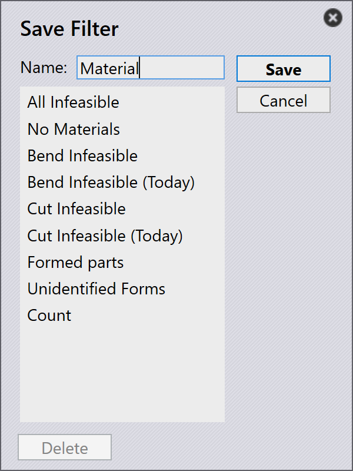

Filter speichern
Gespeicherte Filter ermöglichen es Ihnen, häufig verwendete Kriterien in Teilen, Aufträgen und Layouts wiederzuverwenden und so Ihren Arbeitsablauf zu optimieren. Jedes Modul verfügt über Standardfilter, aber zusätzliche Filterlisten können bei Bedarf von Site-Admins oder Programmierern erstellt werden. Die Wiederverwendung gespeicherter Filter spart Zeit und hilft, Konsistenz bei Suchvorgängen zu gewährleisten.
-
Klicken Sie auf das Symbol
 , um die Standardfilter anzuzeigen.
, um die Standardfilter anzuzeigen.
Schritte zum Speichern von Filtern
-
Klicken Sie auf das Symbol
 und wählen Sie ein beliebiges Filterelement aus.
und wählen Sie ein beliebiges Filterelement aus.
-
Wählen Sie aus dem Dropdown-Menü des ausgewählten Filterelements eine Option. Ein Häkchen erscheint neben der ausgewählten Bedingung.

-
Um die Bedingung anzuwenden, klicken Sie auf das Symbol
und wählen Sie dann
Bedingung hinzufügen (Strg+PLUS)]. Sie können diesen
Schritt wiederholen, um mehrere Bedingungen hinzuzufügen.
-
Um diese ausgewählten Filter mit Bedingungen zu speichern, klicken Sie auf Filter speichern… (Strg+S)].

-
Geben Sie den Namen ein und klicken Sie dann auf _Speichern.

-
Über den Dialog Filter speichern können Sie auch zuvor gespeicherte Filter löschen.
-
Diese Filter werden in der Standard-Filterliste gespeichert. Hier wird Material in der Standardliste gespeichert.

| Von SiteAdmin & Admin erstellte Filter werden für alle Benutzer freigegeben. Von Programmer & Operator erstellte Filter werden nur für die Benutzerrollen Programmer und Operator freigegeben. |
Filterbefehle
| Befehl | Symbol | Tastenkombination | Beschreibung |
|---|---|---|---|
Clear Selection |
Ctrl+X |
Hebt die Auswahl aller ausgewählten Optionen auf und aktualisiert die Filterelementansicht. |
|
Select Highlighted |
|
Ctrl+A |
Wählt alle hervorgehobenen Optionen aus. Dieser Befehl bleibt deaktiviert, wenn die Elementhervorhebung für das ausgewählte Feld nicht anwendbar ist. |
Match All |
|
& |
Zeigt nur Elemente an, die alle ausgewählten Bedingungen erfüllen. |
Pin In/Out Menu |
|
Ctrl+Down/Up |
Wenn angeheftet, bleibt das Dropdown-Menü geöffnet, auch wenn der aktuelle Fokus zu einem anderen Fenster wechselt. |
Close Menu |
|
Esc |
Schließt das Dropdown-Menü. |